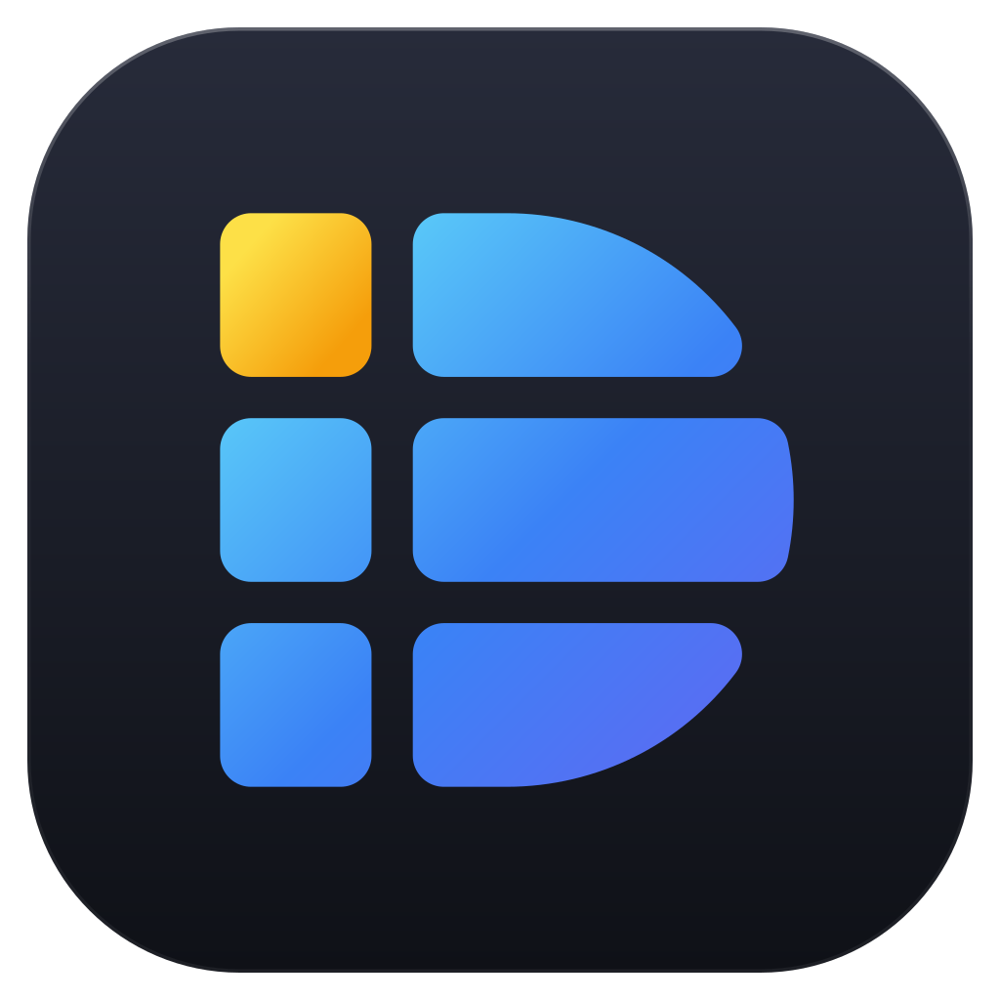

DataLiq
Windows · macOS · Linux
Open huge data files in seconds.
A desktop app that opens multi-gigabyte CSV, Parquet, JSON and Excel files in about a second, then lets you filter, query with SQL, chart, clean and export them. No account, no telemetry, fully offline.
- SQL over every open file, with joins and query plans
- Charts, column profiles and data-quality checks on millions of rows
- Clean, convert and export without touching the original file
- A command-line report runner and an MCP server for AI assistants
RustTauriReactTypeScriptDuckDB